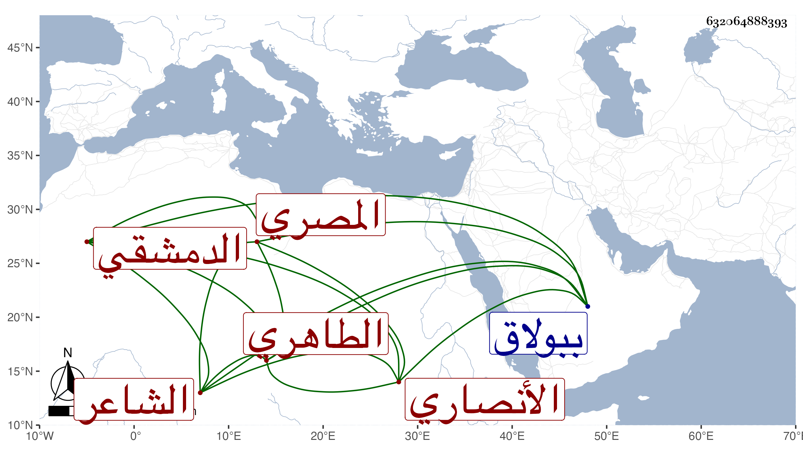

0902Sakhawi.DawLamic.ITO20230111-ara1.EIS1600.632064888393
Biography ID: 632064888393
932
محمد بن إبراهيم بن محمد البدر أبو البقاء الأنصاري الدمشقي الأصل المصري الشاعر الشهير الطاهري ويعرف بالبدر البشتكي . كان أبوه فاضلا فولد له هذا في أحد الربيعين سنة ثمان وأربعين وسبعمائة بجوار جامع بشتك الناصري ونشأ بخانقاه بشتك وكان أحد صوفيتها فعرف بالنسبة إليها وحفظ القرآن وكتابا في فقه الحنفية ثم تحول شافعيا وصحب البهاء محمد بن عبد الله الكازروني وكان عجبا في جذب الناس للإقامة عنده بحيث يهجروا أهاليهم ونحوهم خصوصا المردان فاجتمع به صاحب الترجمة وهو كذلك مع كونه من أجمل أهل عصره صورة فلم يتمكن من مفارقته بل أقام عنده ينسخ له كتب ابن العربي بحيث كتب منها الكثير وغيرها ثم امتحن بسبب ذلك فأظهر الرجوع وأمعن النظر في كلام ابن حزم فغلب عليه حبه وتزيا بكل زي وسلك كل طريق واشتغل في فنون كثيرة ولكنه لم يتقن شيئا منها وأخذ عن الجمال بن نباتة جملة من شعره وكاد حكاية في الرقة والجزالة وعن غيره من معاصريه كالقيراطي والصفدي والبدر بن الصاحب ، وتعانى الأدبيات فمهر فيها وقال الشعر الجيد الكثير السائر ومدح الأعيان كالقاضي برهان الدين بن جماعة ولذا كان البرهان يعظمه جدا وجمع كتابا حافلا في طبقات الشعراء وقفت على بعضه وكذا جمع نظم شيخه ابن نباتة في مجلدين تعب في تحصيله ومع ذلك فقد فاته منه جملة بحيث استدرك عليه شيخنا مما فاته مجلدا رأيته أيضا ، ولم يعتن هو بجمع نظم نفسه وهو شيء كثير فانتدب لجمع ما أمكنه منه الشهاب الحجازي وذيل عليه بعض الطلبة وقد حدث البدر بالكثير من نظمه كتب عنه الأئمة ، وممن كتب عنه ابن موسى المراكشي ومعه الموفق الأبي كراسة من نظمه وكان بينه وبين الجلال بن خطيب داريا مكاتبات لطيفة وله قدرة على اختراع الحكايات والنوادر غاية في ذلك مع نزاهة نفس وإيثار للانفراد والوحدة والجلادة على النسخ مع الإتقان والسرعة الزائدة بحيث كان يكتب في اليوم خمس كراريس فأكثر وربما يتعب فيضطجع على جنبه ويكتب ، وكتب بخطه من المطولات والمختصرات لنفسه ولغيره ما لا يدخل تحت الحصر كثرة خصوصا النهر لأبي حيان وأعراب السمين والكرماني وتاريخ الإسلام للذهبي حتى كتب من تصانيف شيخنا ووجد له بآخر نسخة من النهر أنها الثانية والعشرون بعد المائة مما كتبه بخطه منه وليس في خطه الحسن بذاك وبلغنا أنه رام الكتابة على بعض الأستاذين فرأى سرعة يده وقوة عصبه فقال له : كم تكتب في اليوم فذكر له قدرا فأشار عليه بترك الاشتغال بملاحظة قوانين الكتابة لأنه لا ينهض بعد انتهائه إلى مرتبة الكتاب لتحصيل ما يتحصل له الآن فما خالفه ، ولسرعة كتابته وملازمته لها كان موسعا عليه ولا يكاد يتقلد مانة كل أحد حتى أنه بلغنا أنه أرسل يستعير من الكمال بن البارزي بيته ببولاق فأرسل له بالمفتاح ومعه عشرة دنانير فقبح بالقاصد وقال له : لم أرسل أستحذيه ثم أخرج جرابه ونثر ما فيه من ذهب وفضة وفلوس بحضرته ولكن عد هذا في سوء طباعه ولذا كان لا يقدر كل أحد على مصاحبته لحدة خلقه وسرعة استحالته وإنكاء جليسه بلسانه نظما ونثرا ، وهو في عقود المقريزي بقوله أنه تزيا بكل زي وسلك كل طريقة ويؤثر الانفراد ويلازم التوحد ولا يقدر كل أحد على معاشرته ، وذكر معنى ما تقدم وأنشد عنه من نظمه أشياء ويحكى عنه قال للكمال الدميري حين شرح ابن ماجه سمه بعثرة الدجاجة وكان حين سمي البلقيني الفوائد المنتهضة على الرافعي والروضة يقول والروضة بفتح الواو ليكون موازيا للمنتهضة ولذا غير البلقيني التسمية إلى المحضة بل كان يقول : لما لم يكن للشيطان سبيل للبلقيني حسن له نظم الشعر فأتى بما يضحك منه ونحو هذا ، وعلت سنه وهو مقيم بخلوة علو المنصورية يرتقى إليها بسبعين درجة فعرض عليه شيخنا أن يعطيه خلوته السفلية قصد التخفيف للمشقة عليه فما أجاب بل صرح بما لا يناسب ، ولم يزل على طريقته إلى أن مات فجأة خرج من الحمام واتكأ فمات في يوم الاثنين ثالث عشري جمادى الأولى سنة ثلاثين عفا الله عنه ورحمه ، وقد انتفع به شيخنا ابتدائه في الأدبيات بل قرأ عليه في العروض وصار يمده بالأغاني ونحوها ، وحضه على الإقبال على الحديث ثم قرأ عليه البدر بعد ذلك الكثير من صحيح البخاري وترجمه في طبقات الشعراء له بترجمة جليلة ، ومن نظمه مما أنشدنيه بعض أصحابه عنه يهجو التقي بن حجة :
| صبيغ دعاويه ما تنتهي | ويخطي الصواب ولا يشعر |
| تفكرت فيه وفي ذقنه | فلم أدر أيهما أحمر |
وقوله يهجو البدر الدماميني :
| تبا لقاض لا ترى أحكامه | إلا على المنثور والمنظوم |
وقوله يهجو ابن خطيب داريا :
| لحى الله داريا فنجل خطيبها | على الله في هذا الزمان قد افترى |
| تنبأ فينا بالضراط وشعره | فكان على الحالين معجزة خرى |
ومما كتبه عنه شيخنا أبو النعيم المستملي ما أنشده إياه في صفر سنة اثنتين وعشرين من نظمه
| يا أخلاي والحياة غرور | اذكروا الموت فالمصير إليه |
| واعملوا صالحا يسر فلا ب | د يقينا ... من القدوم عليه |
ومن نظمه :
| وكنت إذا الحوادث دنستني | فزعت إلى المدامة والنديم |
| لأغسل بالكؤوس الهم عني | لأن الراح صابون الهموم |
وقوله :
| بدا بوجه جميل | قد شرف الحسن قدره |
| في شمسه كل صب | يود يبذل بدره |
وكتب له شيخنا في رمضان :
| أليس عجيبا بأنا نصوم | ولا نشتكي من أذى الصوم غما |
| ونسغب والله في نسكنا | إذا نحن لم نرو نثرا ونظما |
فأجابه بقوله :
| أيا شهابا رقى في العلى | فأمطرنا نوؤه العذب قطرا |
| إلى فقرة منك يا فقرنا | ونستغن إن قلت نظما ونثرا |
وقد كثر ولع الشعراء به مما هو مشهور فلا نطيل به ومن ذلك قول عويس العالية :
| أيا معشر الصحب مني اسمعوا | مقالي ولس أخت من ينتكي |
| ألا فالعنوا آكلين الحشيش | وبولوا على شارب البشتكي |
والبشتكي ضرب من المسكرات كالتمر بغاوي ونحوه .
